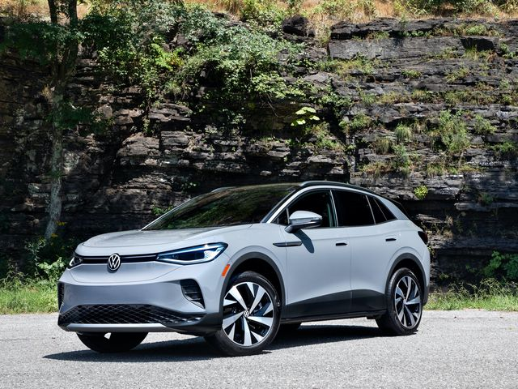

volkswagen ID4
ID.4-ის საწარმოო ვერსია დებიუტი იყო 2020 წლის სექტემბერში, როგორც პირველი სრულად ელექტრო კროსოვერი SUV Volkswagen-ის ბრენდის ქვეშ, ხოლო ID.4-ის კუპეს ფორმის ვარიანტი (Audi e-tron Sportback-ის მსგავსი) არის. ბაზარზე, როგორც Volkswagen ID.5 და გამოვლინდა 2021 წლის ნოემბერში.